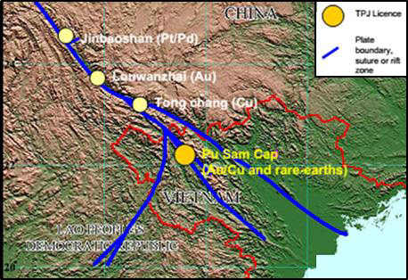
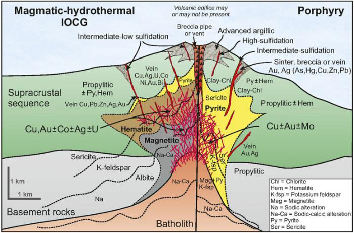
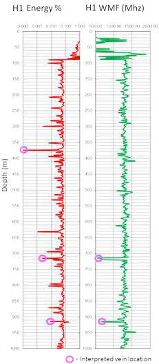
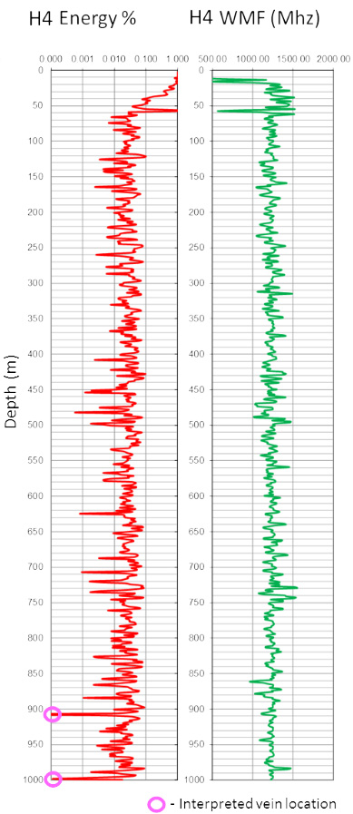
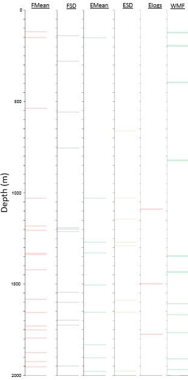
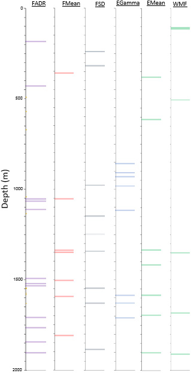

Identifying gold bearing hydrothermal veins and disseminated copper ore in northern Vietnam.
Project aims
The aim of this project was to establish if ADR scanning could assist Triple Plate Junction in identifying the both the gold bearing hydrothermal vein system and the disseminated copper ore deposit present at a greater depth located in northern Vietnam. The project to date has consisted of: field survey data collection (December 2016) processing, interpretation and reporting (January 2017).
Exploration/Project challenges
Due to the survey location being extremely remote (Figure 1), other exploration methods such as drilling and geophysical mapping are harder to conduct over the area due to cost and poor access. Triple Plate Junction wanted to test Adrok’s applicability to survey mineralised zones, non-destructively from the surface. If successful Adrok’s technique shall aid Triple Plate Junctions exploration efforts by helping to add value to their drilling program, thus saving time and cost of their exploration phase.
Geological context
 Figure 1: Location map of the survey area Pu Sam Cap.The fieldwork location is a mix of both IOCG (Iron Oxide Copper Gold) and Porphyry regimes (Figure 2), but is considered generally a Porphyry regime with elements of a IOCG system. Erosion has meant the removal of most of the supracrustal sequence and much of the local rock type is now Breccia and Sericite alteration. Copper is primarily deposited as Chalcopyrite, which transitions to Bornite closer to the Ore body. Economic Gold is contained within the larger scale hydrothermal veins which reach out further from the fracture framework. The goals of the ADR survey were to reliably use Adrok’s measurements in conjunction with TPJ’s knowledge of the local geology to gain a better understanding of subsurface lithology and presence/absence of copper porphyry and hydrothermal gold deposits.
 Figure 2: Geological regime example for end member models of the surveyed location in Vietnam.Adrok’s results
V-bores H1 (BB003) & H4 (TB) used a combination of Energy % and WMF results to identify locations for the hydrothermal veins, troughs in Energy % were used as the primary indicator based on similar work carried out for other hydrothermal projects; this was often backed up by troughs in the WMF logs. H1 (BB003) predicted hydrothermal veining at 374.35m with two less confident predictions at 715.66m and 914.71m (Figure 3). H4 (TB) predicted hydrothermal veining at 907.58m and 998.57m (Figure 4).
 Figure 3: H1 (BB003) Energy % and WMF logs with hydrothermal veining interpretation.  Figure 4: H4 (TB) Energy % and WMF logs with hydrothermal veining interpretation.V-bores H2 (UND002) & H3 (NNT002) used the Harmonics results to predict the location of the copper porphyry system. Various energy ad frequency Harmonic tools (Figures 5 & 6) were used to show how, after 1000m, the ADR signal was exhibiting far more peak Energy and Frequency returns than the shallower half of the V-bore. This suggested a significant lithology change after 1000m, likely to be caused by either the pluton and or copper porphyry deposits.
 Figure 5: H2 (UND002) energy and frequency harmonics showing how the number of maximum peaks increase greatly with depth after 1000m.  Figure 6: H3 (NNT002) energy and frequency harmonics showing how the number of maximum peaks increase greatly with depth after 1000m.Benefits for client
Adrok successfully completed pre-survey modelling, acquisition and reporting to the client in northern Vietnam and overcame logistical and environmental challenges of operating in this area. Adrok’s ability to deploy to remote environments that make more conventional exploration methods difficult to implement, along with Adrok’s depth penetration and Mineralisation identification, make it uniquely suited to conducting exploration in this environment. This results in bringing down time and costs associated with extreme exploration activities.